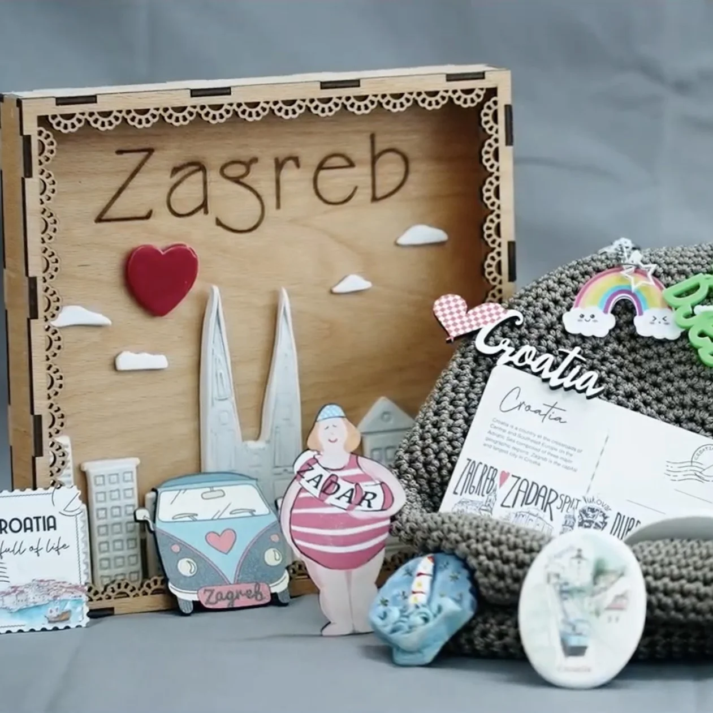

RAZVOJ PONTESA • VARAŽDIN
Pogon za preradu hrane i razvoj proizvodnje
Od plodova vlastite zemlje do proizvoda, novih znanja i prilika za rad.

Prerada hrane u Pontesu već živi. Projekt pogona nije početak proizvodnje, nego korak prema uređenijem, sigurnijem i profesionalnijem sustavu koji povezuje poljoprivredu, preradu, obrazovanje i radno iskustvo.
Zašto je projekt potreban
Pontes Salutis u Varaždinu razvija vlastitu poljoprivrednu proizvodnju, a dio proizvedenog voća i povrća već se prerađuje u različite prehrambene proizvode.
Prerada hrane prirodan je nastavak rada na zemlji. Ona omogućuje očuvanje i povećanje vrijednosti uroda, smanjenje gubitaka hrane te upoznavanje čitavog procesa — od uzgoja i berbe do prerade i gotovog proizvoda.
Za Pontes je taj proces posebno važan jer otvara prostor za stjecanje novih radnih navika, praktičnih vještina, odgovornosti i znanja koja mogu biti korisna pri budućem zapošljavanju.
Cilj je postojeću preradu razviti u uređen, opremljen i propisima usklađen pogon za preradu hrane.
POSTOJEĆE ISKUSTVO • NOVA RAZVOJNA FAZA
Ne počinjemo od nule
Pontes već ima iskustvo prerade vlastitih poljoprivrednih proizvoda.
Tijekom proizvodne sezone prerađuju se rajčica, paprika, patlidžan, šljive i drugo voće i povrće. Razvijaju se proizvodi poput ajvara, proizvoda od rajčice, pekmeza i džemova, sušenih proizvoda te drugih oblika prerade voća i povrća.
Dio profesionalne opreme potrebne za preradu već je nabavljen.
Sljedeći korak nije započeti proizvodnju, nego postojeće iskustvo smjestiti u odgovarajući prostor i razviti sustav koji može zadovoljiti potrebne tehničke, higijenske i organizacijske uvjete.
Što projekt obuhvaća
- uređenje i opremanje prostora namijenjenog preradi hrane
- prijem i pripremu sirovine
- preradu voća i povrća
- termičku obradu i druge postupke prerade
- sušenje i druge oblike konzerviranja
- punjenje i pakiranje
- skladištenje
- kontrolu higijenskih i proizvodnih postupaka
- praktično obrazovanje i radno iskustvo korisnika.
Prostor treba projektirati i urediti u skladu s važećim zahtjevima za proizvodnju hrane. Pogon treba biti povezan s postojećom poljoprivrednom proizvodnjom i budućim razvojem plastenika.
Povezani koraci razvoja
vlastiti uzgoj → berba → prerada → proizvod → znanje → radno iskustvo
Poljoprivreda i prerada hrane u Pontesu nisu dva odvojena projekta.
Povrće i voće proizvedeno na našim površinama može se koristiti za potrebe kuće, preraditi u proizvode s većom dodanom vrijednošću ili sačuvati za kasnije korištenje.
Razvojem plastenika taj će se krug dodatno proširiti i omogućiti stabilniju opskrbu sirovinom tijekom većeg dijela godine.
Od zemlje do gotovog proizvoda
Pontes želi povezati cijeli proizvodni ciklus:
zemlja → proizvodnja → berba → prerada → gotov proizvod → održivost
Vrijednost projekta upravo je u povezivanju poljoprivrede i prerade hrane u jedan smislen sustav. Svaki korak nadovezuje se na prethodni i doprinosi održivosti proizvodnje i života Pontesa.
Rad koji postaje struka
Pogon za preradu hrane zamišljen je i kao prostor učenja.
Pontes želi praktični rad povezivati sa stručnim obrazovanjem i osposobljavanjem iz područja poljoprivrede, prehrambene proizvodnje i prerade hrane.
Cilj je da čovjek iz Pontesa, gdje god je moguće, ne ponese samo iskustvo života u zajednici nego i konkretna znanja, radne navike i kompetencije koje može koristiti nakon izlaska iz programa.
ČOVJEK U SREDIŠTU PROJEKTA
Znanje. Rad. Odgovornost. Kvalifikacija. Samostalnost.
Vrijednost pogona za preradu hrane neće se mjeriti samo brojem proizvedenih staklenki.
Njegova najveća vrijednost bit će u ljudima koji će kroz svakodnevni rad učiti planirati, poštovati procedure, surađivati, preuzimati odgovornost i stjecati znanja koja im mogu otvoriti nove mogućnosti nakon izlaska iz Pontesa.
Trenutačni status projekta
Prerada hrane već se provodi, a projekt budućeg uređenog pogona nalazi se u fazi razvoja prostora i pripreme daljnjeg projektiranja.
Za budući pogon određen je prostor u sklopu Pontes Salutisa u Varaždinu, a dio profesionalne opreme već je nabavljen.
Sljedeći korak je provjera i projektiranje prostora prema važećim zahtjevima za preradu hrane te utvrđivanje potrebnih građevinskih, tehničkih i administrativnih zahvata.
Planirane faze
- Analiza i projektiranje postojećeg prostora prema važećim zahtjevima.
- Utvrđivanje potrebnih građevinskih i tehničkih zahvata.
- Uređenje prostora i ugradnja postojeće opreme.
- Dopuna nedostajuće opreme i organizacija proizvodnih procesa.
- Povezivanje proizvodnje sa stručnim obrazovanjem i praktičnim osposobljavanjem.
- Postupni razvoj proizvodnog programa.
Fotografije i napredak
Ovdje ćemo pratiti razvoj pogona kroz mali dnevnik projekta. Svaki zapis sadržavat će:
- fotografiju
- datum
- opis izvedenog koraka
- značenje tog koraka za daljnji razvoj pogona.
Zapisi dnevnika i autentične fotografije bit će dodani nakon sadržajnog uređenja svih projektnih stranica. Trenutačna privremena fotografija ostaje; nije potvrda izvedenih zahvata.
Partneri, donatori i financiranje
- Projektanti
- Za naknadni unos nakon potvrde.
- Stručni partneri
- Za naknadni unos nakon potvrde.
- Obrazovni partneri
- Za naknadni unos nakon potvrde.
- Donatori
- Za naknadni unos nakon potvrde.
- Izvori financiranja
- Za naknadni unos nakon potvrde.
- Natječaji i financijski instrumenti
- Za naknadni unos nakon potvrde.
Budite dio razvoja koji povezuje rad, znanje i samostalnost
Pomozite nam da rad na zemlji pretvorimo u znanje, proizvod i priliku za samostalan život.
Razvoj pogona za preradu hrane moguće je podržati znanjem, opremom, stručnom suradnjom ili financijskim doprinosom.
Želimo graditi proizvodnju koja nije sama sebi svrha, nego dio puta prema radu, odgovornosti i samostalnosti.
Donacije su u previewu samo ogledni prikaz, bez naplate.